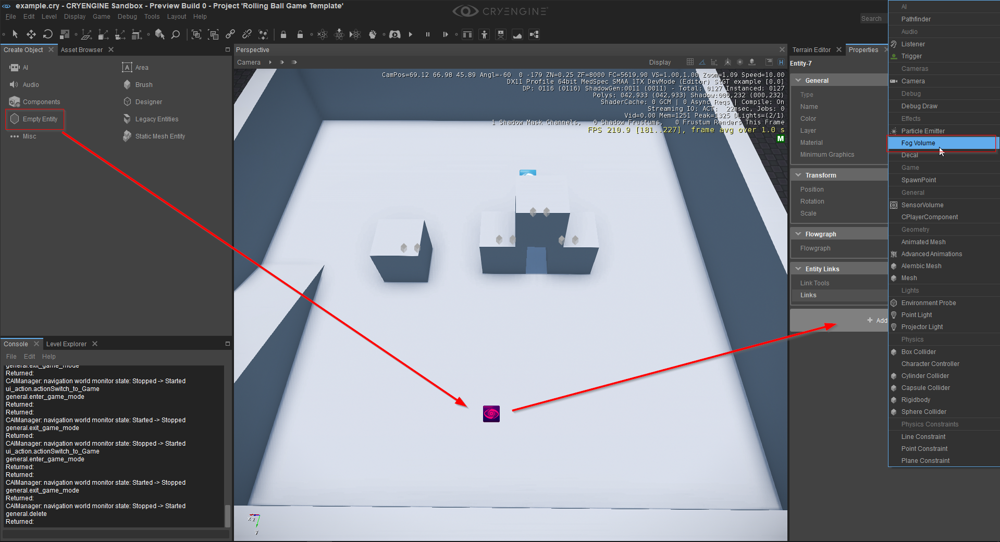
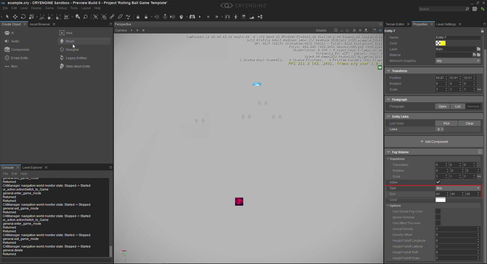
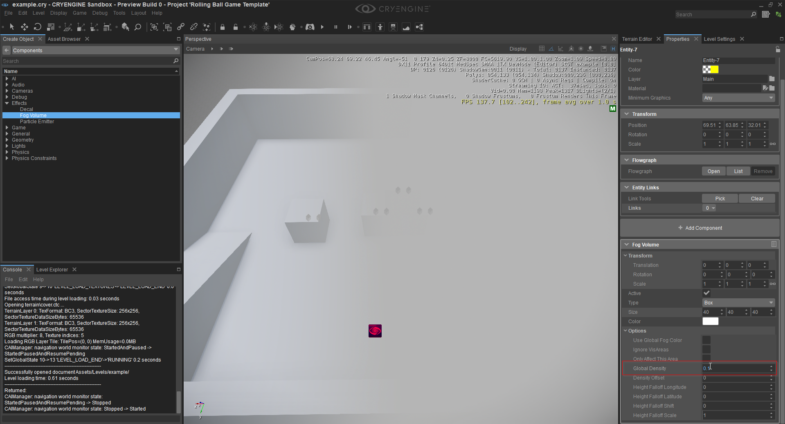
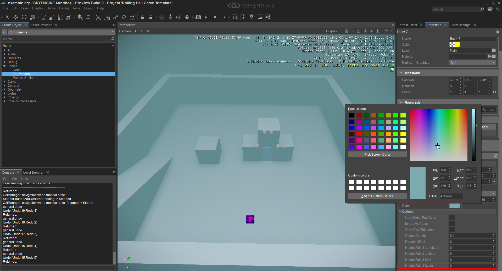

Использование компонента объема тумана
В этом уроке мы объясним компонент объема тумана и как его настроить. Объем тумана создает туман в определенной области. Я бы также рекомендовал посмотреть Компоненты сущности документацию, чтобы понять или посмотреть, что делают конкретные атрибуты.
Прежде всего, нам нужно создать новую пустую сущность и добавить к ней компонент объема тумана. Перейдите на панель «Создать объект», нажмите кнопку «Пустой объект» и поместите объект на уровень. Выберите объект и нажмите кнопку «Добавить компонент» на панели «Свойства» и найдите объем тумана.
Создаем объект и добавляем к нему компонент объема тумана.

Рядом с сущностью должен образоваться небольшой туман. Чтобы лучше видеть объем тумана, мы собираемся увеличить область эффекта. Чтобы изменить размер объема тумана, перейдите к атрибуту «Размер» и отрегулируйте значения рядом с ним. Также можно изменить тип формы объема между «Эллипсоид» и «Коробка». Чтобы изменить тип, нажмите кнопку рядом с атрибутом «Тип», после чего откроется раскрывающийся список, в котором вы можете выбрать.
Изменение размера и типа объема тумана.

Как вы можете видеть, теперь туман покрывает размер коробки, но мы больше не можем видеть наши объекты, поскольку туман слишком густой. Чтобы изменить это, настройте атрибут «Глобальная плотность» компонента, который определяет толщину тумана.
Изменение плотности тумана.

Теперь мы снова видим уровень, но туман с правой стороны толще, потому что атрибут «Масштаб падения высоты» по умолчанию равен 1. Изменение значения на 0 устранит спад, и туман будет везде одинаковой плотности. Также можно изменить цвет тумана или использовать глобальный цвет тумана, определенный параметром Environment Editor (старая версия от 26 февраля). Просто нажмите на поле цвета рядом с атрибутом «Цвет» и выберите любой цвет.
Установка «Шкалы снижения высоты» на 0 и изменение цвета тумана.
